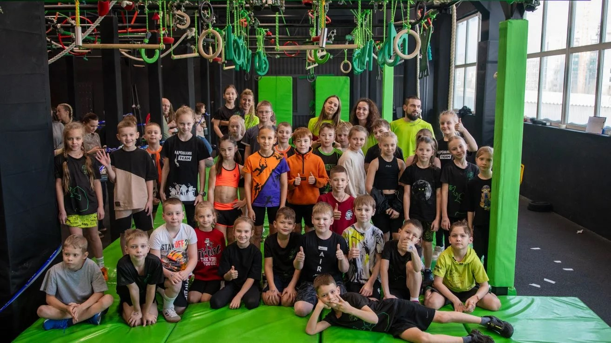
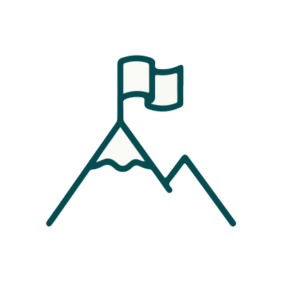
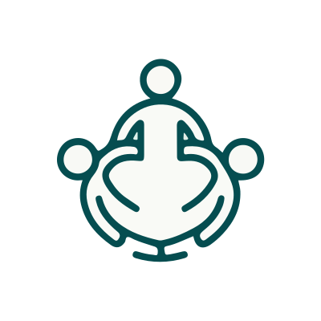
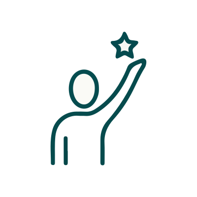
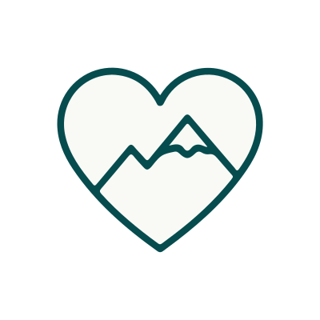
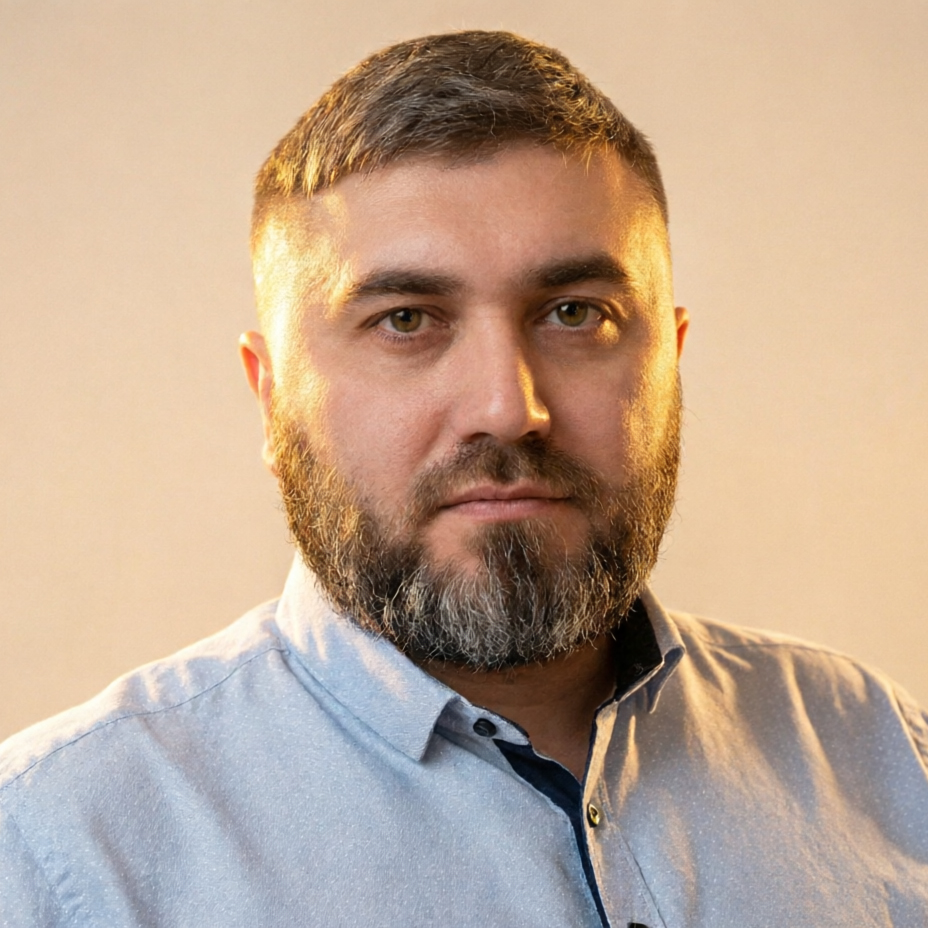

Формируем культуру преодоления в Югре
РОО «Федерация гонок с препятствиями ХМАО-Югры»
Делаем доступный спорт массовым. Объединяем тех, кто ценит движение, команду и результат — от 5 до 60 лет.
Галерея
Моменты соревнований, тренировок и событий федерации
Кто мы
Официально зарегистрированная региональная общественная организация, созданная для развития гонок с препятствиями в ХМАО-Югре.
Мы — команда единомышленников, которая верит, что спорт должен быть для всех. Поэтому мы создали Федерацию гонок с препятствиями в Югре.
Просто о нас
- Появились в феврале 2026 года
- Хотим, чтобы OCR стал доступен каждому жителю региона
- Работаем вместе с федеральным центром (ocrrussia.com), чтобы стандарты безопасности и качества были на уровне
- Базируемся в Нефтеюганске, но работаем по всей Югре
Что мы делаем
Строим трассы, где пятилетний ребёнок бежит рядом с опытным атлетом. Где семья преодолевает препятствия вместе. Где корпоративная команда проверяет себя не в офисе, а на полосе препятствий.
Наша цель
Чтобы каждый, кто хочет двигаться — мог это делать. Безопасно, интересно, с поддержкой.
Что меняется, когда появляется новый формат
OCR — это не просто спорт. Это инструмент, который объединяет поколения, вовлекает молодёжь и укрепляет сообщество.

Доступный спорт
Преодоление по силам каждому: от первых шагов в 5 лет до уверенного финиша в 60

Командный дух
Эстафеты «родители + дети», корпоративные форматы, межпоколенческие старты

Молодёжная вовлечённость
Альтернатива пассивному досугу, волонтёрские программы для подростков

Патриотический контекст
Воспитание стойкости через спорт и уважение к родному краю
Формат, в котором могут участвовать разные поколения — усиливает связь внутри сообщества и расширяет аудиторию проекта.
Кто может стать частью движения
Федерация открыта для партнёров, участников и волонтёров — каждый может найти свой формат.
Дети 5–12 лет
Адаптированные дистанции, семейные старты, первые шаги в спорте
Подростки и молодёжь 13–25 лет
«Гонка молодых», волонтёрство, челленджи
Взрослые 26–45 лет
Корпоративные лиги, тимбилдинг, личный вызов
Участники 46–60 лет
Формат «здоровье через движение», наставничество, семейные эстафеты
Когда в одном событии участвуют разные поколения — это создаёт уникальную атмосферу и расширяет возможности для партнёрства.
Как можно поддержать развитие формата
Мы на этапе формирования календаря и инфраструктуры. Это возможность предложить идеи, ресурсы или экспертизу — и увидеть, как проект растёт с вашим участием.
Не просто логотип на баннере, а реальное присутствие в моменте. Вы можете стать соорганизатором старта, оформить зону восстановления, поддержать призовой фонд или провести свою активацию прямо на трассе. Участники запомнят бренд, который был рядом в самый напряжённый и радостный момент. Это прямой и тёплый контакт с активной аудиторией, которая ценит энергию, действие и честное партнёрство.
Гонки с препятствиями — один из немногих форматов, где на одной дистанции могут оказаться пятилетний ребёнок и взрослый атлет. Поддерживая семейный трек, вы помогаете создавать безопасную и вдохновляющую среду для родителей и детей. Адаптированные препятствия, праздничная атмосфера и акцент на взаимовыручке делают старт событием, к которому семьи возвращаются снова. Это вклад в традицию здорового досуга и долгосрочную лояльность аудитории.
Подростки и студенты ищут реальные вызовы и живое сообщество, а не пассивный досуг. В этом треке мы делаем ставку на волонтёрские программы, студенческие лиги и сотрудничество с учебными заведениями. Поддержка направления помогает молодым людям прокачивать soft skills, учиться ответственности и работать в команде. Для партнёра это возможность встроиться в среду будущих специалистов и укрепить репутацию бренда, который инвестирует в развитие поколения.
Любой массовый спорт начинается с фундамента: безопасных трасс, качественного инвентаря и чёткой организации. Мы открыты к партнёрству с теми, кто может предоставить площадки, оборудование, помочь с логистикой или поделиться опытом в безопасности и медицинском сопровождении. Ваша профессиональная поддержка напрямую влияет на качество и надёжность каждого старта. Это вклад в инфраструктуру, которая останется в регионе надолго и станет основой для роста всего движения.
Инклюзивный формат — это не только социальная ценность, но и более широкая аудитория для коммуникации с брендом.
Ближайшие шаги
Поэтапный план развития формата OCR в регионе — от аккредитации до масштабирования в городах Югры.
2026, весна–лето
- Аккредитация в Департаменте спорта ХМАО-Югры
- Запуск «Арктического забега в Югре» (Ханты-Мансийск)
- Пилотные семейные старты (формат 5+)
2026, осень–зима
- Регулярный календарь стартов с возрастными категориями
- Пилотные корпоративные и молодёжные форматы
2027
- Расширение географии: Нефтеюганск, Сургут, Нижневартовск
- Запуск программы «Наставник»: участники 45+ поддерживают молодёжь
Каждый этап — возможность предложить решение, которое сделает спорт доступнее для конкретного возраста или группы.
Как мы работаем
Прозрачность, открытость и безопасность — основные принципы деятельности федерации.
- Юридический статус: РОО, действующая организация (ОГРН 1268600000855)
- Открытость: реквизиты, устав, контакты — в свободном доступе
- Отчётность: по запросу — информация о ходе реализации и использовании ресурсов
- Безопасность: приоритет медицинскому сопровождению и регламентам на всех стартах
Доверие строится на прозрачности. Мы готовы к диалогу и открыты к вопросам.
Документы
Уставные, регистрационные и отчётные документы федерации — в открытом доступе
Давайте обсудим
Есть идея, ресурс или вопрос? Напишите — найдём формат, который будет полезен и проекту, и вам.

Мы на старте развития OCR в Югре — сейчас закладываются маршруты, календарь и партнёрские программы. Это возможность войти в проект на раннем этапе: предложить ресурсы, экспертизу или идею, а в ответ получить лояльную аудиторию и статус соавтора спортивного движения региона.